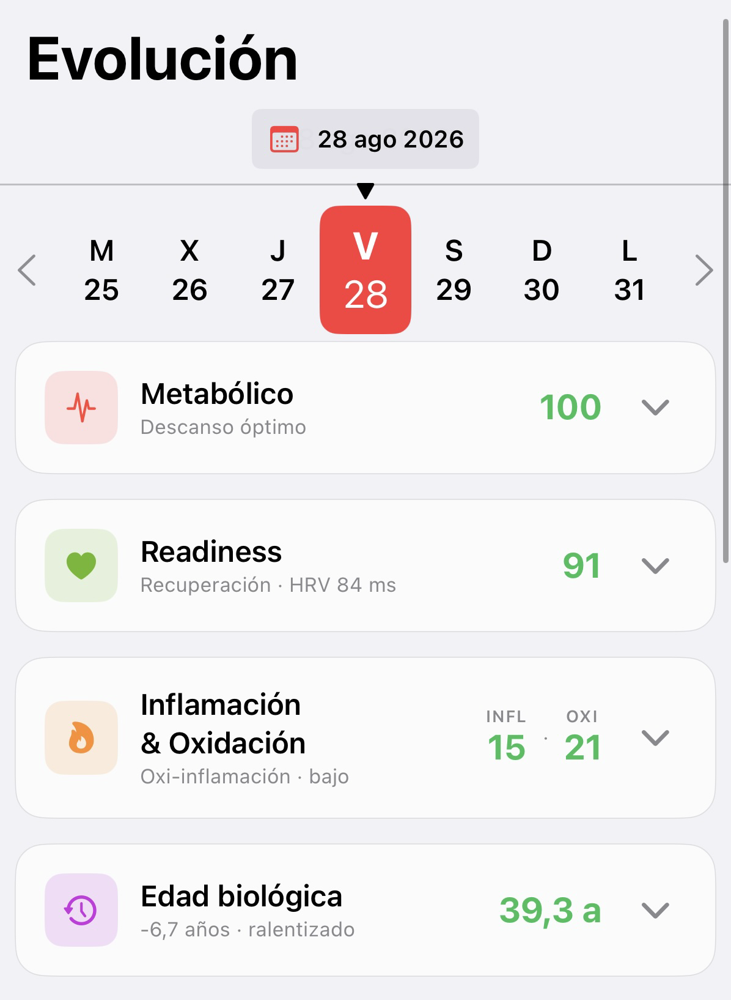

Detrás de Glucovibes
Toda tu salud, en una sola pantalla.
Porque la salud no se entiende a trozos.
Desliza →
Hacemos visible lo invisible
Porque la salud no se entiende a trozos.
Desliza →

Captura real de la fase de testing de la app Glucovibes.
Tu glucosa cobra sentido cuando la cruzas con cómo dormiste, cuánto te moviste o tu última analítica.
Desliza →
glucovibes.com